通过 SSH 进行远程开发
本教程将引导你使用 Visual Studio Code Remote - SSH 扩展，在 Azure 上创建并连接到虚拟机 (VM)。你将创建一个 Node.js Express Web 应用，以展示如何在远程计算机上使用 VS Code 进行编辑和调试，就像源代码在本地一样。
注意：你的 Linux VM 可以托管在任何地方——本地主机、本地部署、Azure 或任何其他云平台，只要所选的 Linux 发行版满足这些先决条件。
先决条件
在开始之前，你需要完成以下步骤：
- 安装一个兼容 OpenSSH 的 SSH 客户端（不支持 PuTTY）。
- 安装 Visual Studio Code。
- 拥有一个 Azure 订阅（如果你没有 Azure 订阅，请在开始前创建一个免费账户）。
安装扩展
Remote - SSH 扩展用于连接到 SSH 主机。
安装 Remote - SSH 扩展
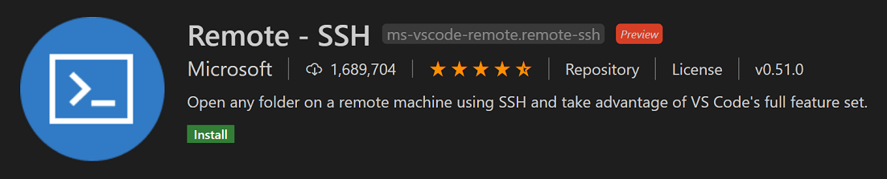
Remote - SSH
安装 Remote - SSH 扩展后，你将在状态栏的最左侧看到一个新的状态栏项。

Remote 状态栏项可以快速显示 VS Code 当前运行在哪个上下文（本地或远程），点击该项将弹出 Remote - SSH 命令。
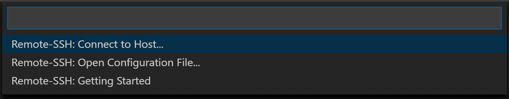
创建虚拟机
如果你没有现有的 Linux 虚拟机，可以通过 Azure 门户创建新的 VM。在 Azure 门户中，搜索"虚拟机"，然后选择添加。在此处，你可以选择 Azure 订阅并创建新的资源组（如果你还没有的话）。
注意：在本教程中，我们使用的是 Azure，但你的 Linux VM 可以托管在任何地方，只要 Linux 发行版满足这些先决条件。
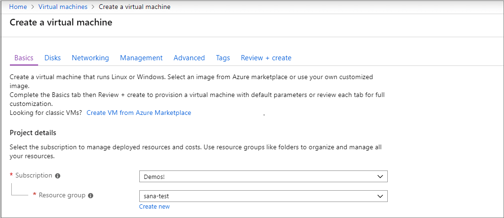
现在你可以指定 VM 的详细信息，例如名称、大小和基础映像。本示例选择 Ubuntu Server 18.04 LTS，但你也可以选择其他 Linux 发行版的较新版本，并查看 VS Code 的受支持的 SSH 服务器。
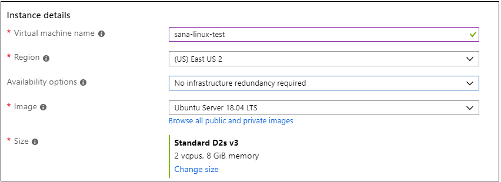
设置 SSH
连接到 VM 有多种身份验证方法，包括 SSH 公钥/私钥对或用户名和密码。我们建议使用基于密钥的身份验证（如果使用用户名/密码，扩展会多次提示你输入凭据）。如果你使用的是 Windows 并且已经使用 PuttyGen 创建了密钥，你可以重用它们。
创建 SSH 密钥
如果你没有 SSH 密钥对，请打开 bash shell 或命令行并输入：
ssh-keygen -t ed25519这将生成 SSH 密钥。在以下提示处按 kbstyle(Enter) 将密钥保存在默认位置（在你的用户目录下，文件夹名为 .ssh）。
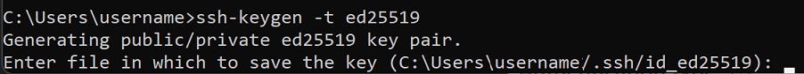
然后系统会提示你输入安全密码，但你可以留空。现在你应该有一个 id_ed25519.pub 文件，其中包含你新的公钥 SSH 密钥。
>注意：如果你使用的是不支持 Ed25519 算法的旧版系统，可以改用 rsa：ssh-keygen -t rsa -b 4096。
将 SSH 密钥添加到你的 VM
在上一步中，你生成了一个 SSH 密钥对。在 SSH 公钥源下拉列表中选择使用现有公钥，以便使用刚刚生成的公钥。复制 id_ed25519.pub 文件的全部内容，将其粘贴到 VM 设置的 SSH 公钥字段中。你还需要允许 VM 接收入站 SSH 流量，方法是选择允许选定的端口，然后从选择入站端口下拉列表中选择 SSH（22）。
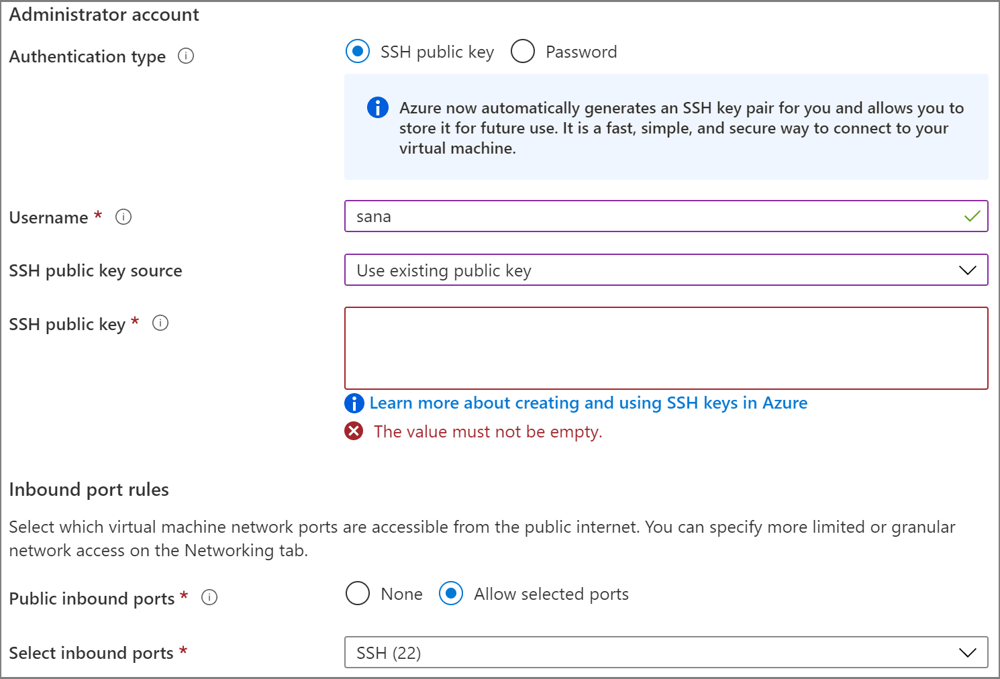
自动关机
使用 Azure VM 的一个很酷的功能是能够启用自动关机（因为说实话，我们都忘记关掉我们的 VM……）。如果你转到管理选项卡，可以设置每天关闭 VM 的时间。
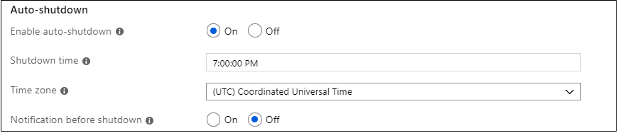
选择查看 + 创建，然后选择创建，Azure 将为你部署 VM！
部署完成后（可能需要几分钟），转到虚拟机的资源视图。
使用 SSH 连接
现在你已经创建了一个 SSH 主机，让我们连接到它！
你会注意到状态栏左下角有一个指示器。这个指示器告诉你 VS Code 当前运行在哪个上下文（本地或远程）。点击该指示器将弹出 Remote 扩展命令列表。
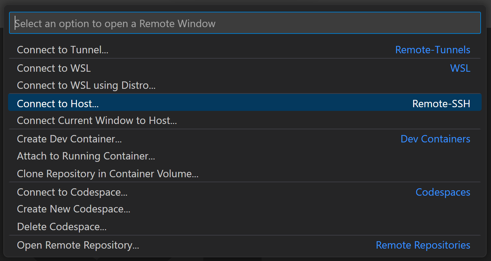
在 Remote-SSH 部分选择连接到主机...命令，然后按以下格式输入 VM 的连接信息来连接到主机：user@hostname。
user 是你在将 SSH 公钥添加到 VM 时设置的用户名。对于 hostname，请返回 Azure 门户，在你创建的 VM 的概述窗格中，复制公共 IP 地址。
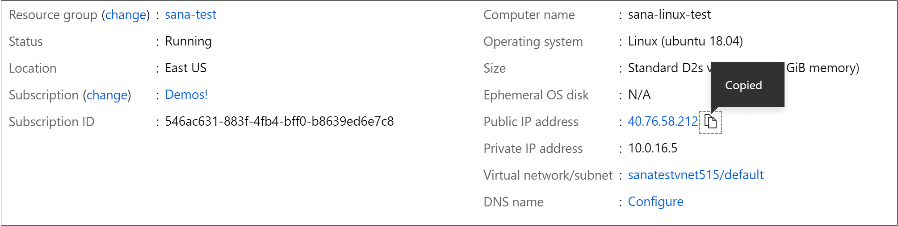
在通过 Remote - SSH 连接之前，你可以使用 ssh user@hostname 命令在命令提示符中验证是否能够连接到 VM。
注意：如果你遇到 ssh: connect to host port 22: Connection timed out 错误，可能需要从 VM 的"网络"选项卡中删除 NRMS-Rule-106：
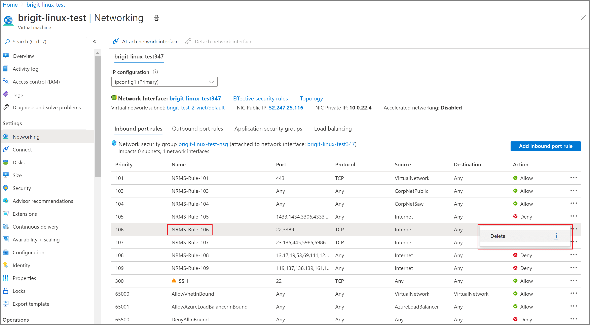
在连接信息文本框中设置用户和主机名。
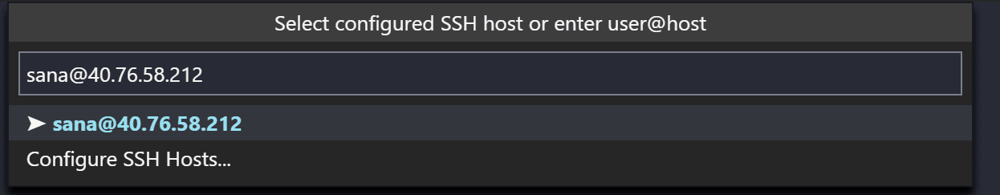
VS Code 现在将打开一个新窗口（实例）。然后你会看到一个通知，显示"VS Code Server"正在 SSH 主机上初始化。一旦 VS Code Server 安装在远程主机上，它就可以运行扩展并与你的本地 VS Code 实例通信。
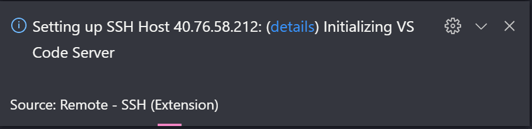
通过查看状态栏中的指示器，你可以知道你已经连接到了 VM。它会显示你的 VM 的主机名。
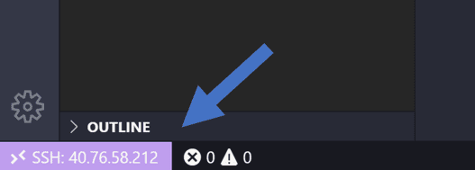
Remote - SSH 扩展还会在活动栏上添加一个新图标，点击它将打开 Remote 资源管理器。在下拉列表中选择 SSH 目标，你可以在其中配置你的 SSH 连接。例如，你可以保存最常连接的主机，然后从这里访问它们，而无需输入用户名和主机名。
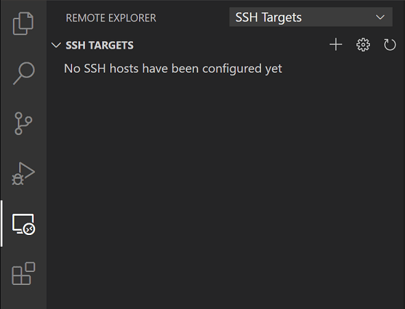
连接到 SSH 主机后，你可以与远程计算机上的文件进行交互并打开文件夹。如果你打开集成终端（kb(workbench.action.terminal.toggleTerminal)），你会看到你正在 bash shell 中工作，尽管你使用的是 Windows。
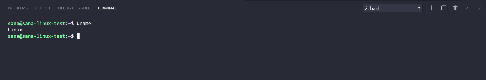
你可以使用 bash shell 浏览 VM 上的文件系统。你还可以通过文件 > 打开文件夹浏览并打开远程主目录上的文件夹。
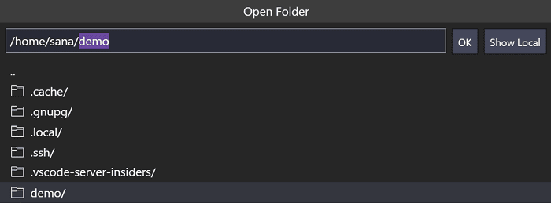
创建你的 Node.js 应用程序
在此步骤中，你将创建一个简单的 Node.js 应用程序。你将使用应用程序生成器从终端快速搭建应用程序框架。
安装 Node.js 和 npm
在集成终端（kb(workbench.action.terminal.toggleTerminal)）中，更新 Linux VM 中的软件包，然后安装 Node.js（其中包含 npm，即 Node.js 包管理器）。
sudo apt-get update
curl -sL https://deb.nodesource.com/setup_lts.x | sudo -E bash -
sudo apt-get install -y nodejs你可以通过运行以下命令来验证安装：
node --version
npm --version安装 Express 生成器
Express 是一个流行的构建和运行 Node.js 应用程序的框架。你可以使用 Express 生成器工具快速搭建（创建）一个新的 Express 应用程序。Express 生成器作为 npm 模块发布，使用 npm 命令行工具 npm 进行安装。
sudo npm install -g express-generator-g 开关将 Express 生成器全局安装到你的计算机上，这样你就可以从任何位置运行它。
创建新应用程序
现在你可以通过运行以下命令创建一个名为 myExpressApp 的新 Express 应用程序：
express myExpressApp --view pug--view pug 参数告诉生成器使用 pug 模板引擎。
要安装应用程序的所有依赖项，请进入新文件夹并运行 npm install。
cd myExpressApp
npm install运行应用程序
最后，让我们确保应用程序能够运行。从终端使用 npm start 命令启动服务器。
npm startExpress 应用默认在 http://localhost:3000 上运行。你在本地浏览器的 localhost:3000 上看不到任何内容，因为 Web 应用正在你的虚拟机上运行。
端口转发
要能够在本地计算机上浏览 Web 应用，你可以使用另一个功能，称为端口转发。
要访问远程计算机上可能未公开暴露的端口，你需要在本地计算机上的端口和服务器之间建立连接或隧道。在应用仍在运行的情况下，打开 SSH 资源管理器并找到已转发的端口视图。点击转发端口链接并指定你要转发端口 3000：
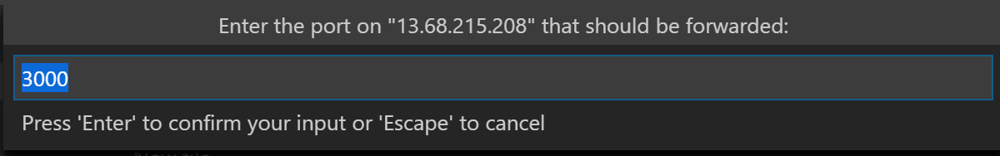
将连接命名为"browser"：
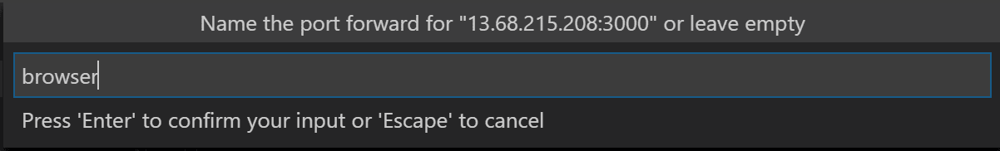
服务器现在将把端口 3000 上的流量转发到你的本地计算机。当你浏览到 http://localhost:3000 时，你将看到正在运行的 Web 应用。
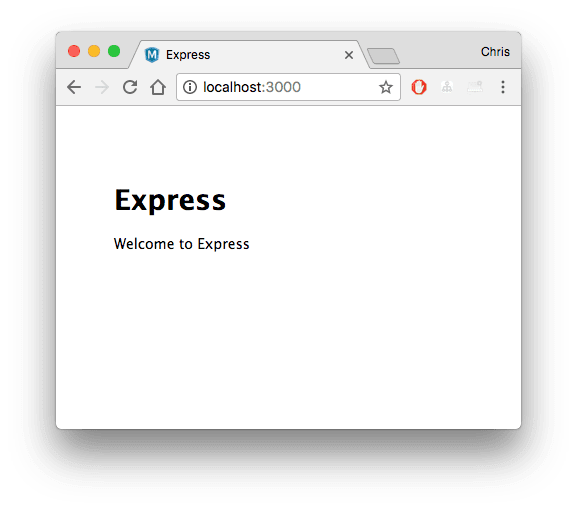
编辑和调试
从 Visual Studio Code 文件资源管理器（kb(workbench.view.explorer)），导航到你新的 myExpressApp 文件夹，然后双击 app.js 文件在编辑器中打开它。
IntelliSense
你对 JavaScript 文件有语法高亮以及带悬停提示的 IntelliSense，就像源代码在本地计算机上一样。
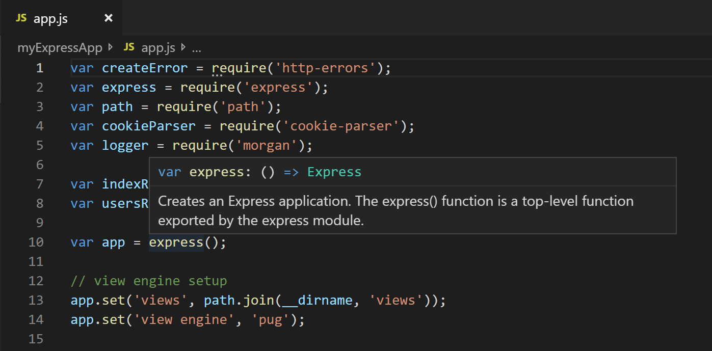
当你开始输入时，你将获得对象方法和属性的智能补全。
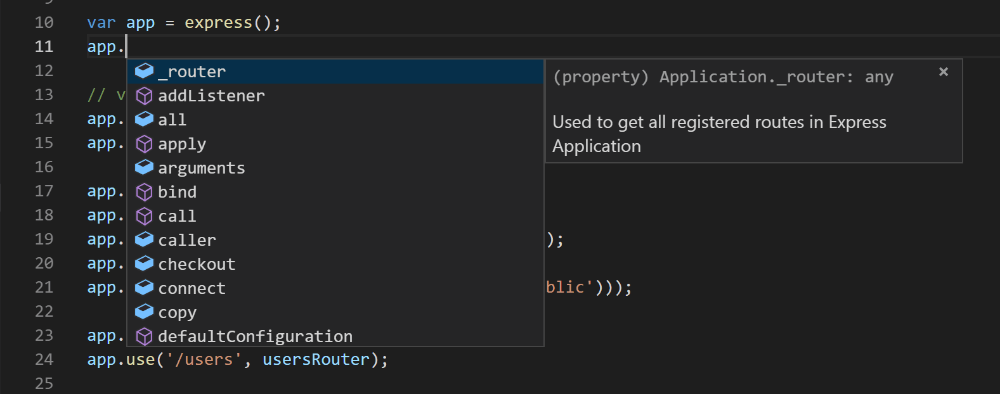
调试
在 app.js 的第 10 行设置一个断点，方法是点击行号左侧的装订线，或者将光标放在该行上并按 kb(editor.debug.action.toggleBreakpoint)。断点将显示为一个红色圆圈。
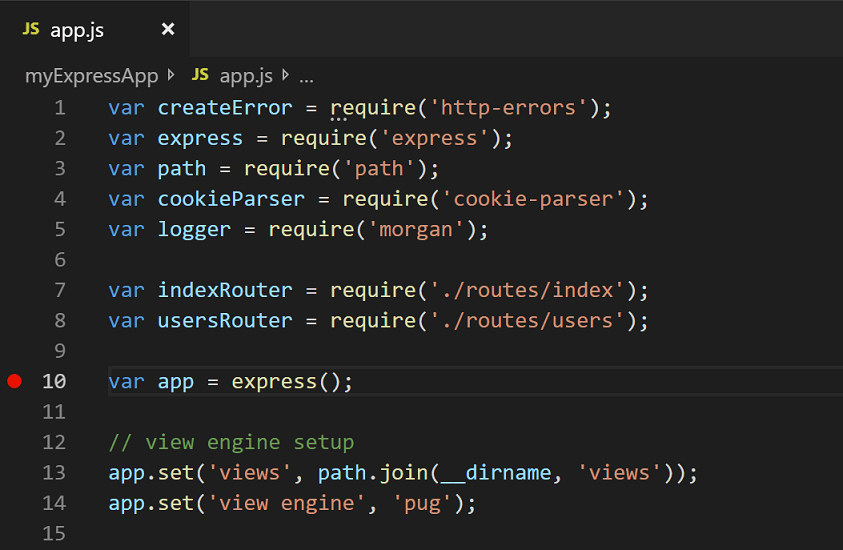
现在，按 kb(workbench.action.debug.start) 运行你的应用程序。如果系统询问你如何运行该应用程序，请选择 Node.js。
应用将启动，你将命中断点。你可以检查变量、创建监视以及浏览调用堆栈。
按 kb(workbench.action.debug.stepOver) 逐步执行，或再次按 kb(workbench.action.debug.start) 完成调试会话。
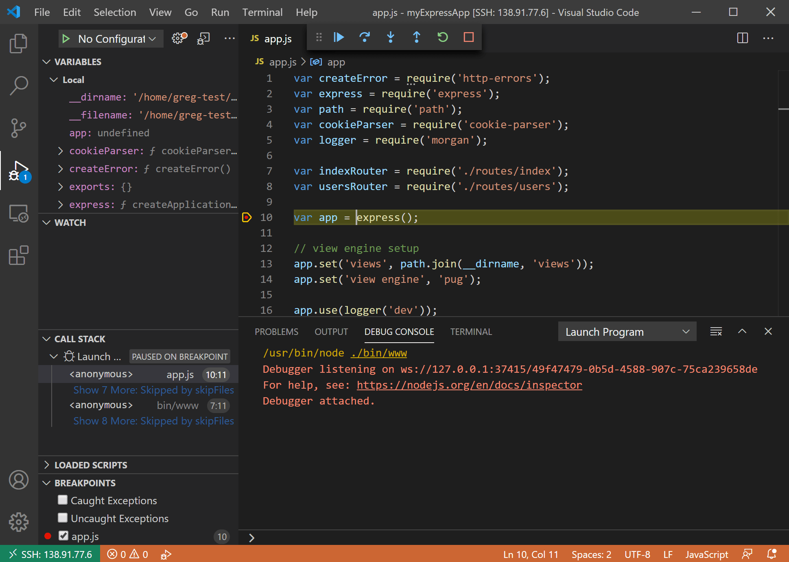
你将获得通过 SSH 连接的 Visual Studio Code 的完整体开发体验。
结束你的 SSH 连接
你可以通过文件 > 关闭远程连接结束 SSH 会话并返回本地运行 VS Code。
恭喜
恭喜，你已成功完成本教程！
接下来，请查看其他 Remote Development 扩展。
或者通过安装
Remote Development 扩展包来一次获取所有扩展。